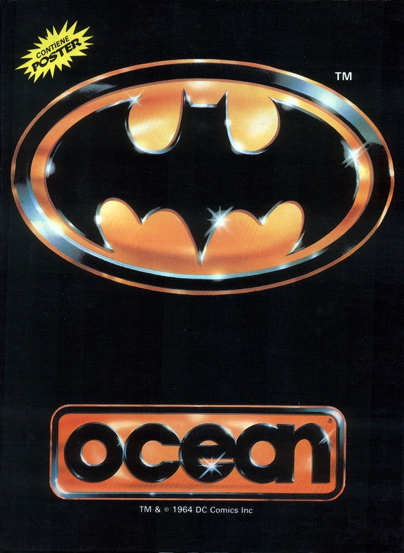
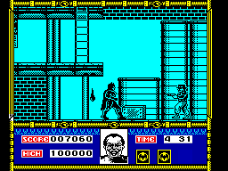

Batman The Movie


{kind=link}

| Publisher: | Ocean |
| Price: | £9.99 Cass, £14.99 Disk |
| Year: | 1989 |
| Source: | CRASH, Issue 70 |

Have you ever danced with the devil in the pale moonlight? Now’s your chance: Batman - The Movie is here. This is Ocean’s third foray into Batworld and without doubt the best with Gotham City hoodlums terrorised by our caped hero, the creation of The Joker and a climax in Gotham City cathedral, just like the film.
The game opens with the police raid on a chemical plant burgled by local hoodlum Jack Napier. Batman chases Napier, negotiating sixty screens filled with hoods, police officers, acid drops and gas from leaky pipes, armed with a seemingly inexhaustible supply of Batarangs to fend off attackers. A gun which fires a rope and grapple has him swinging to a swashbuckling confrontation with Napier and level end, with the villain plunging into a vat of acid. Thus The Joker is spawned...

On level two Batman rescues beautiful photographer Vicki Vale from the clutches of a vengeful Joker, and they make their escape in the Batmobile zipping down the streets with Gotham police In hot pursuit. The immense speed of the car makes ordinary turns impossible, and only by shooting out a cable which snags a handy lamp post can Batmobile be swung in the desired direction.
Safety found in the Batcave, it’s time for a bit of brainwork: Batman has one minute to solve the riddle of how an apparently random poisoning campaign waged by The Joker can be thwarted.
And on: In his Batwing our hero must save an unsuspecting crowd from The Joker’s Smilex poison about to be unleashed from overhead carnival balloons. The wingtips must cut the balloons’ mooring ropes. Success crashlands poor old Batman into the climactic last 100 screen level in the cathedral.
The Joker has taken refuge on the roof. Using his Batrope, the Caped Crusader must climb to the top of the tower, fighting off cops and The Joker’s men, to reach the villain and put paid to him. I’m a great Batman fan, and not disappointed! Jack Nicholson’s movie performance as the psychotic Joker is ably matched by the pixellated stand-in and the Batman sprite is no slouch either. Go with a smile and get this extravaganza (probably better than the film!).
MARK — 94%
Oh, I’ve got a live one here! Ha, ha, ha! What a game. Batman has all the excellent graphics and sound of Robocop, with maze layouts to add that extra playability, and that’s just the first level (I can’t get any further!). The sprites of Batman and The Joker are recognisable with better pictures of the characters on the energy level indicator at the bottom of the screen. Sound is good too, with plenty of effects and a tune that plays throughout, although it’s hardly Prince’s Batdance! My only quibble is that it’s a bit hard. I’ve spent hours playing the game and haven’t even got past the first bit (though I have seen the later levels), it gets more and more playable as you progress with the Batmobile, Batwing and cathedral levels all to look forward to. Batman - The Movie is another excellent movie tie-in from Ocean... Stop the press!
NICK — 92%
RATING
A brill and varied humdinger of a film tie-in. No joke!
| Presentation: | 91% |
| Graphics: | 91% |
| Sound: | 89% |
| Playability: | 92% |
| Addictivity: | 93% |
| Overall: | 93% |